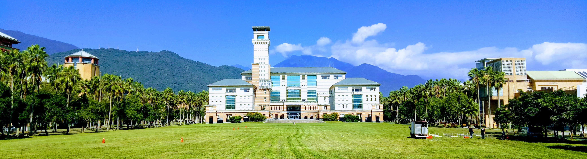
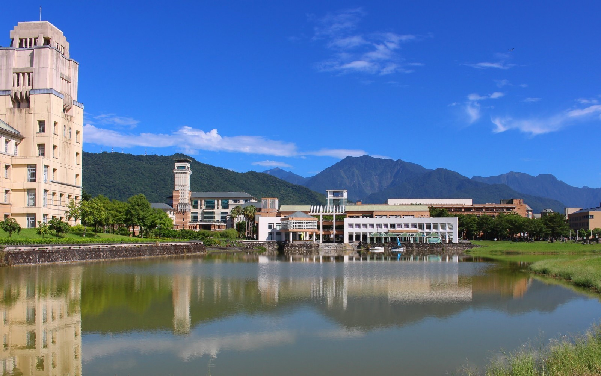

National Dong Hwa University (NDHU; Chinese: 國立東華大學; shortened as "東華") is a national research university located in Hualien, Taiwan. Established in 1994, NDHU is widely considered as a high potential research university and the most prestigious university in Eastern Taiwan by Liberty Times, THE, QS, US News. The university offers a wide range of disciplines, including the sciences, engineering, computer science, environmental studies, law, arts, design, humanities, social sciences, education sciences, marine science, music, and business.
NDHU is renowned for its liberal atmosphere and rigorous academics. It's organized into eight colleges, 38 academic departments, and 56 graduate institutes, which enrolled about 10,000 undergraduate pursuing degrees and joining exchange programs. The NDHU L i brary holds more than two million volumes and is eighth largest academic library in Taiwan. The University's main campus is located in Shoufeng, in the northern half of Hualien Co Encompassing an area of 251 hectares (620 acres), the main camp u s houses almost all colleges and research institutes except the College of Marine Science, which is jointly founded in National Museum of Marine Biology and Aquarium.
In 2021, NDHU was ranked Top 10% Universities in Taiwan by THE, QS, U .S.News, and leading in Computer Science, Electrical & Electronic Engineering, Hospitality & Tourism Management in Taiwan by THE, ARWU.>
 